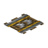

控制铁轨：信号强弱决定车速。
参数
配方金锭×6+木棍+电子管
产出6 条
详细教程
怎么获得
有序合成：上排左右各一块金锭，中排左右各一块金锭、中间一根木棍，下排左右各一块金锭、中间一个电子管——6 块金锭 + 1 木棍 + 1 电子管，一次出 6 条。
电子管要石英、玻璃与铜线做，属于中期件；一次出 6 条，铺一段试车线基本够用。
怎么用
它是单向动力轨：车只会朝箭头方向被推走，速度和红石信号强度挂钩，信号越强越快，信号为零就停。用拉杆或模拟信号就能调速。
铺的时候注意朝向，箭头反了车就原地不动；做变速段时用一条红石线沿轨道走，靠不同位置的信号强度做出加速、巡航、进站减速。
搭配
和列车轨道分工：列车跑长途用列车轨道，厂内矿车与试车线用控制铁轨；配矿车连轴器还能拉着几辆车一起走。
调速要用可调信号源，普通的拉杆只有开关两档；想做平滑加速就接模拟拉杆或分段的红石强度，别指望一个按钮跑出车速表。